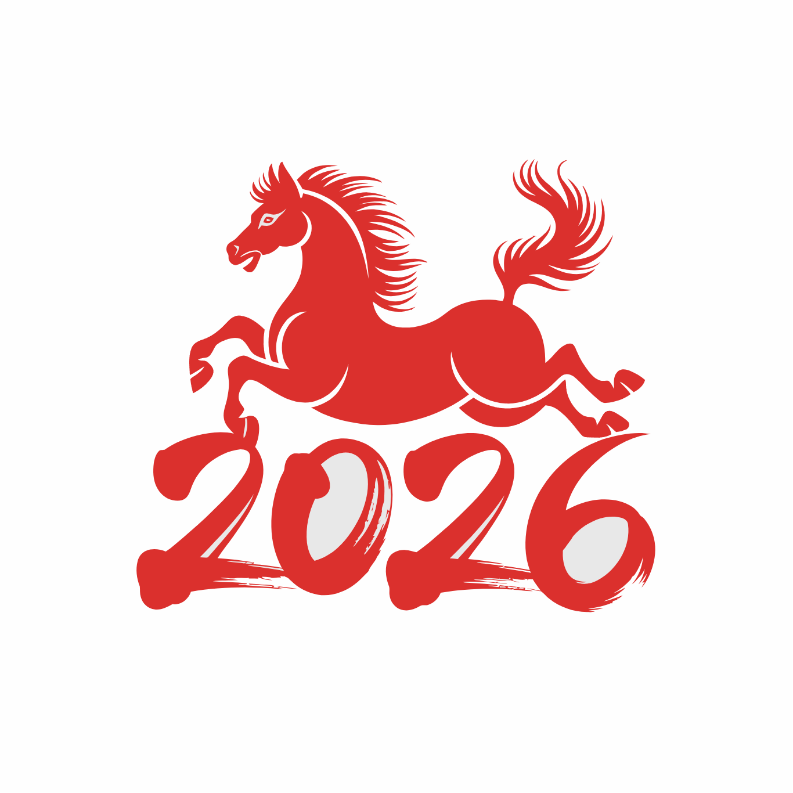

<!--
CodeSandbox 分享文件
生成时间: 2026/5/4 16:48:21
页面标题: Leaflet 标注示例
原始页面链接: https://sogrey.top/CodeSandbox/
-->

<!-- CodeSandbox Template File -->
<!-- 该文件包含完整的模板数据和设置信息，可以被重新导入 -->
<engine-type>leaflet</engine-type>
<title>Leaflet 标注示例</title>
<meta name="description" content="Leaflet 地图标注示例，涵盖图片标注、文本标注、矢量图形标注、自定义标注、Popup标注、视频标注，基于高德地图底图。" />
<template>
<div id="map"></div>

<div class="control-panel">
  <select id="markerType" class="marker-select">
    <option value="image">1. 图片标注</option>
    <option value="text">2. 文本标注</option>
    <option value="vector">3. 矢量图形标注</option>
    <option value="custom">4. 自定义标注</option>
    <option value="popup">5. Popup标注</option>
    <option value="video">6. 视频标注</option>
  </select>
</div>

<div class="info-panel" id="infoPanel">
  <div>📍 当前标注类型: <span id="currentType">图片标注</span></div>
  <div>💡 提示: 使用下拉列表切换标注类型</div>
</div>

<div class="legend-panel" id="legendPanel">
  <div class="legend-title">图例说明</div>
  <div id="legendContent"></div>
</div>
</template>
<script>
L.tileLayer.amap = function(option) {
    option = option || {};
    var layer;
    var subdomains = "1234";
    switch (option.layer) {
      case "vec":
      default:
        layer = L.tileLayer(
          "https://webrd0{s}.is.autonavi.com/appmaptile?lang=zh_cn&size=1&scale=1&style=8&x={x}&y={y}&z={z}", {
            name: option.name || "矢量图",
            subdomains: subdomains,
            attribution: '&copy; <a href="https://www.amap.com/">高德地图</a>'
          }
        );
        break;
    }
    return layer;
  };

  var vec = L.tileLayer.amap({ layer: "vec", name: "矢量图" });

  var map = L.map("map", {
    center: [30.5217, 114.3948],
    zoom: 18,
    layers: [vec],
    zoomControl: false,
    doubleClickZoom: false
  });

  L.control.zoom({ position: 'bottomright' }).addTo(map);

  var currentMarkers = [];
  var videoLayer = null;
  var playMarker = null;
  var pauseMarker = null;

  var imageMarker, textMarker, vectorLayer, customMarker, popupMarker;

  function clearMarkers() {
    currentMarkers.forEach(function(marker) {
      if (marker instanceof L.Layer) {
        map.removeLayer(marker);
      }
    });
    currentMarkers = [];
  }

  function showImageMarker() {
    clearMarkers();
    imageMarker = L.marker([30.5215, 114.3943], {
      draggable: true,
      title: "图片标注"
    }).addTo(map);
    imageMarker.bindPopup("📍 图片标注示例").openPopup();
    currentMarkers.push(imageMarker);
    updateLegend("图片标注", "标准图标标注，支持拖拽");
  }

  function showTextMarker() {
    clearMarkers();
    textMarker = L.marker([30.5217, 114.3948], {
      opacity: 0
    }).addTo(map);
    textMarker.bindTooltip("🏛️ 文本标注", {
      permanent: true,
      direction: "right",
      className: 'custom-tooltip'
    }).openTooltip();
    currentMarkers.push(textMarker);
    updateLegend("文本标注", "使用 Tooltip 显示文本");
  }

  function showVectorMarker() {
    clearMarkers();
    var polyline = L.polyline([[30.52247, 114.39332], [30.5209, 114.39332], [30.5209, 114.3953]], {
      weight: 6,
      color: '#ef4444'
    }).addTo(map);
    
    var rectangle = L.rectangle([[30.52172, 114.39359], [30.52153, 114.39428]], {
      color: "#ff7800",
      weight: 2,
      fillColor: '#fbbf24',
      fillOpacity: 0.5
    }).addTo(map);
    
    var circle = L.circle([30.5212, 114.3955], {
      color: '#3b82f6',
      fillColor: '#3b82f6',
      fillOpacity: 0.3,
      radius: 50
    }).addTo(map);

    polyline.on('click', function(e) {
      L.popup().setContent("🖼️ 点击了折线").setLatLng(e.latlng).openOn(map);
    });
    rectangle.on('click', function(e) {
      L.popup().setContent("⬜ 点击了矩形").setLatLng(e.latlng).openOn(map);
    });
    circle.on('click', function(e) {
      L.popup().setContent("⭕ 点击了圆形").setLatLng(e.latlng).openOn(map);
    });

    currentMarkers.push(polyline, rectangle, circle);
    updateLegend("矢量图形标注", "折线、矩形、圆形，支持点击交互");
  }

  function showCustomMarker() {
    clearMarkers();
    var customIcon = L.icon({
      iconUrl: '../../assets/images/2026马.png',
      iconSize: [60, 60],
      iconAnchor: [30, 30]
    });
    customMarker = L.marker([30.5217, 114.3948], {
      icon: customIcon,
      draggable: true,
      title: "自定义标注"
    }).addTo(map);
    customMarker.bindPopup("🐴 自定义图片标注").openPopup();
    currentMarkers.push(customMarker);
    updateLegend("自定义标注", "使用自定义图片作为标记图标");
  }

  function showPopupMarker() {
    clearMarkers();
    popupMarker = L.marker([30.5217, 114.3948]).addTo(map);
    popupMarker.on('click', function() {
      L.popup({ maxWidth: 280 })
        .setLatLng([30.5218, 114.3948])
        .setContent(`<div style="width:268px;font-size:14px;margin-bottom:8px;">🏞️ 自定义Popup内容</div>
          `)
        .openOn(map);
    });
    popupMarker.bindTooltip("👆 点击查看Popup");
    currentMarkers.push(popupMarker);
    updateLegend("Popup标注", "点击标记显示包含图片的弹窗");
  }

  function showVideoMarker() {
    clearMarkers();
    var videoUrl = 'https://www.mapbox.com/bites/00188/patricia_nasa.webm';
    var videoBounds = [[30.5207, 114.3938], [30.5227, 114.3958]];

    var playIcon = L.icon({
      iconUrl: '../../assets/images/play.png',
      iconSize: [60, 60],
      iconAnchor: [30, 30]
    });

    var pauseIcon = L.icon({
      iconUrl: '../../assets/images/pause.png',
      iconSize: [40, 40],
      iconAnchor: [20, 20]
    });

    playMarker = L.marker([30.5217, 114.3948], { icon: playIcon }).addTo(map);
    pauseMarker = L.marker([30.5217, 114.3948], { icon: pauseIcon });

    playMarker.on('click', function() {
      videoLayer = L.videoOverlay(videoUrl, videoBounds).addTo(map);
      map.removeLayer(playMarker);
      map.addLayer(pauseMarker);
    });

    pauseMarker.on('click', function() {
      map.removeLayer(videoLayer);
      map.removeLayer(pauseMarker);
      map.addLayer(playMarker);
    });

    currentMarkers.push(playMarker, pauseMarker);
    updateLegend("视频标注", "点击播放按钮添加视频图层");
  }

  function updateLegend(title, description) {
    document.getElementById('legendContent').innerHTML = 
      `<div class="legend-item">📌 <strong>${title}</strong></div>
       <div class="legend-desc">${description}</div>`;
  }

  function switchMarker(type) {
    document.getElementById('currentType').innerText = document.getElementById('markerType').options[document.getElementById('markerType').selectedIndex].text;
    
    switch(type) {
      case 'image':
        showImageMarker();
        break;
      case 'text':
        showTextMarker();
        break;
      case 'vector':
        showVectorMarker();
        break;
      case 'custom':
        showCustomMarker();
        break;
      case 'popup':
        showPopupMarker();
        break;
      case 'video':
        showVideoMarker();
        break;
    }
  }

  document.getElementById('markerType').addEventListener('change', function(e) {
    switchMarker(e.target.value);
  });

  switchMarker('image');
</script>
<style>
* { margin: 0; padding: 0; box-sizing: border-box; }
  body { font-family: 'Inter', 'Segoe UI', sans-serif; height: 100vh; overflow: hidden; }
  #map { width: 100%; height: 100%; }

  .control-panel {
    position: absolute; top: 20px; right: 20px; z-index: 1000;
  }

  .marker-select {
    background: rgba(255,255,255,0.95); backdrop-filter: blur(12px);
    border: 1px solid rgba(0,0,0,0.1); border-radius: 12px;
    padding: 10px 20px; font-size: 14px; font-weight: 500;
    color: #1e2a3a; cursor: pointer; outline: none;
    box-shadow: 0 8px 20px rgba(0,0,0,0.12);
    min-width: 200px;
    appearance: none;
    background-image: url("data:image/svg+xml,%3Csvg xmlns='http://www.w3.org/2000/svg' width='24' height='24' viewBox='0 0 24 24' fill='none' stroke='%23333' stroke-width='2' stroke-linecap='round' stroke-linejoin='round'%3E%3Cpolyline points='6 9 12 15 18 9'%3E%3C/polyline%3E%3C/svg%3E");
    background-repeat: no-repeat;
    background-position: right 10px center;
    background-size: 18px;
  }

  .marker-select:hover {
    border-color: #006eff;
  }

  .info-panel {
    position: absolute; bottom: 80px; left: 20px; z-index: 1000;
    background: rgba(0,0,0,0.7); backdrop-filter: blur(12px);
    border-radius: 12px; padding: 12px 16px; font-size: 12px;
    color: #f0f9ff; font-family: 'Consolas', monospace;
    box-shadow: 0 8px 20px rgba(0,0,0,0.2);
  }

  .info-panel span { color: #ffd966; font-weight: 600; }

  .legend-panel {
    position: absolute; top: 20px; left: 20px; z-index: 1000;
    background: rgba(255,255,255,0.95); backdrop-filter: blur(12px);
    border-radius: 12px; padding: 12px 16px;
    box-shadow: 0 8px 20px rgba(0,0,0,0.12);
    min-width: 200px;
  }

  .legend-title {
    font-size: 13px; font-weight: 600; color: #1e2a3a;
    margin-bottom: 8px; border-bottom: 1px solid rgba(0,0,0,0.1);
    padding-bottom: 6px;
  }

  .legend-item { font-size: 13px; color: #1e2a3a; margin-bottom: 4px; }
  .legend-desc { font-size: 11px; color: #6b7280; }

  .custom-tooltip {
    font: italic bold 16px/30px arial,sans-serif;
    color: #ef4444;
    text-align: center;
    border: 0;
    background: transparent !important;
    box-shadow: none !important;
  }

  .leaflet-tooltip {
    box-shadow: 0px 0px 0px rgba(255,255,255,0) !important;
    background-color: rgba(255,255,255,0) !important;
  }

  .leaflet-tooltip-right:before {
    border-right-color: rgba(255,255,255,0) !important;
  }

  .leaflet-control-zoom {
    position: absolute !important; bottom: 20px !important; right: 20px !important;
    top: auto !important; left: auto !important; border: none !important;
    box-shadow: 0 2px 8px rgba(0,0,0,0.15) !important; margin: 0 !important;
  }

  .leaflet-control-zoom a {
    background: rgba(255,255,255,0.95) !important; backdrop-filter: blur(4px);
    color: #1f2937 !important; width: 36px !important; height: 36px !important;
    line-height: 36px !important; font-size: 18px !important; font-weight: bold !important;
  }

  .leaflet-control-zoom a:hover { background: #006eff !important; color: white !important; }
  .leaflet-control-attribution {
    background: rgba(0,0,0,0.6) !important; color: #ccc !important; font-size: 10px !important;
  }

  @media (max-width: 700px) {
    .legend-panel { min-width: 160px; padding: 10px 12px; }
    .info-panel { font-size: 10px; bottom: 70px; }
    .marker-select { min-width: 160px; padding: 8px 14px; font-size: 12px; }
  }
</style>

<!-- Settings Section - 设置数据，将被自动解析 -->
<settings>
<head-metadata>

</head-metadata>
<css-links>

</css-links>
<js-links>

</js-links>
</settings>
